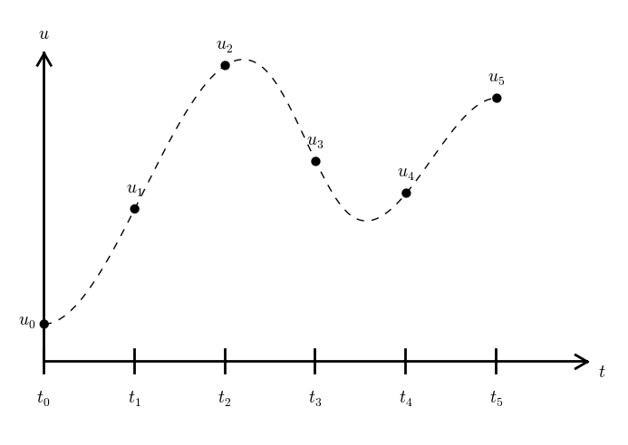

Differential Equations

This exercise addresses the differential equation problem
$$ \begin{align} u'(t) &= -au(t), \quad t \in (0,T], \label{ode}\\ u(0) &= I, \label{initial:value} \end{align} $$ where \( a \), \( I \), and \( T \) are prescribed constant parameters, and \( u(t) \) is the unknown function to be estimated. This mathematical model is relevant for physical phenomena featuring exponential decay in time.
Derive the \( \theta \)-rule scheme for solving \eqref{ode} numerically with time step \( \Delta t \):
$$ u^{n+1} = \frac{1 - (1-\theta) a\Delta t}{1 + \theta a\Delta t}u^n, $$ Here, \( n=0,1,\ldots,N-1 \).
The numerical method is implemented in a Python function
solver (found in the decay_mod module):
from numpy import linspace, zeros
def solver(I, a, T, dt, theta):
"""Solve u'=-a*u, u(0)=I, for t in (0,T] with steps of dt."""
dt = float(dt) # avoid integer division
N = int(round(T/dt)) # no of time intervals
T = N*dt # adjust T to fit time step dt
u = zeros(N+1) # array of u[n] values
t = linspace(0, T, N+1) # time mesh
u[0] = I # assign initial condition
for n in range(0, N): # n=0,1,...,N-1
u[n+1] = (1 - (1-theta)*a*dt)/(1 + theta*dt*a)*u[n]
return u, t
Fix the values of where \( I \), \( a \), and \( T \). Then vary \( \Delta t \) for \( \theta=0,1/2,1 \). Illustrate that if \( \Delta t \) is not sufficiently small, \( \theta=0 \) and \( \theta=1/2 \) can give non-physical solutions (more precisely, oscillating solutions).
Perform experiments and determine empirically the convergence rate for \( \theta=0,1/2,1 \).